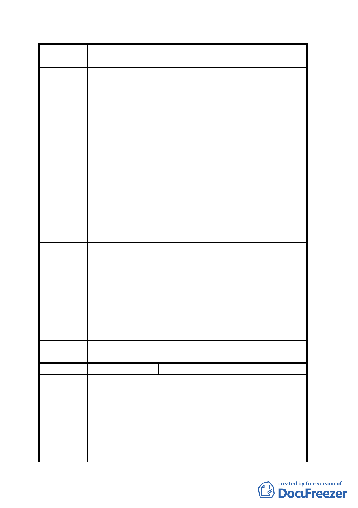

案
名
變更「修訂台北市主要計畫商業區（通盤檢討）計
畫案」內有關商業區變更回饋相關規定案
本區居民又要再一次面臨抗爭的夢魘。陳情檢討八十
四年修訂之「修訂臺北市主要計畫商業區（通盤檢討）
計畫案」，將「臺北市土地使用分區管制規則」內「住
宅區內禁設加油站」之精神納入，勿讓原屬住宅區的
居民為本市商業健全發展付出犧牲生活品質的代價。
陳情人林坤松等五○○人為士林區中正路 187 巷周邊居
民，本區原屬第三種住宅區，經八十四年九月二十七日公
告之「修訂臺北市主要計畫商業區（通盤檢討）計畫案」
變更為第三種商業區。自八十四年以來，本區居民才赫然
發現----本區由住宅區變更為商業區後，加油站竟可合法設
建 議 辦 法 置於住宅咫尺之內，而九十一年八月二十七日修訂「臺北
市土地使用分區管制規則」所新增「住宅區內禁設加油站」
之規定，竟無法保護本區民免受加油站威脅？故本區居民
特連署要求將「住宅區內禁設加油站」之精神納入本計畫，
勿讓原屬住宅區的居民為本市商業健全發展付出犧牲生活
品質之代價。
一、 有關加油站之設置，除依臺北市土地使用分區管制規
則規定申請外，應依「臺北市社區參與實施辦法」規
定辦理社區參與。
專案小組
審查結論
二、 另為保障生活環境，專案小組第五次審查會議時，依
建設局之建議針對第 12 組公用事業（加油、加氣站）
設置乙項，請市府於『社區參與實施辦法』、『臺北市
土地使用分區管制規則附條件允許使用核准標準』等
法令層次中針對商業區鄰避使用作嚴格、詳盡的規
定。
委員會議
決議
依專案小組審查結論辦理。
編 號 6 陳情人 張炳輝等四十四人
一、 從政策面檢討：自從臺北市政府實施住三變更為商三
特容積率不變，仍須回饋。實施十多年來，僅有十多
個案件申請，換言之，平均一年只有一個案件申請，
陳情理由
可以說是該都市計畫不適用，而且是失敗的政策。
二、 從地方繁榮面檢討：住三變更為商三特之路段，大部
分皆在面臨三十米以上道路，尤其在老舊社區，以本
案件為例，陳情人等之房屋位置在松山路與松隆路
邊，位於松山火車站正對面，生意興隆，地區繁榮，
一四